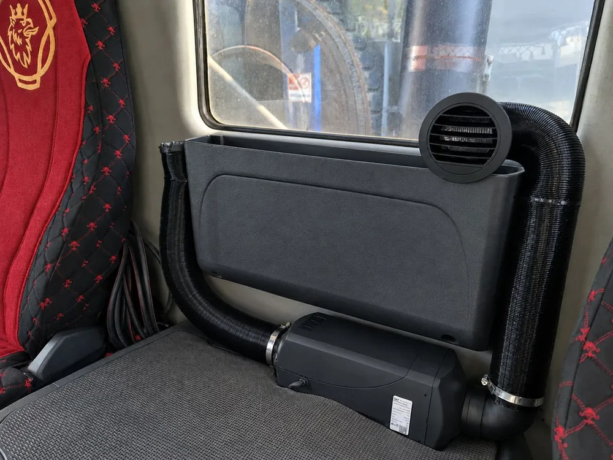
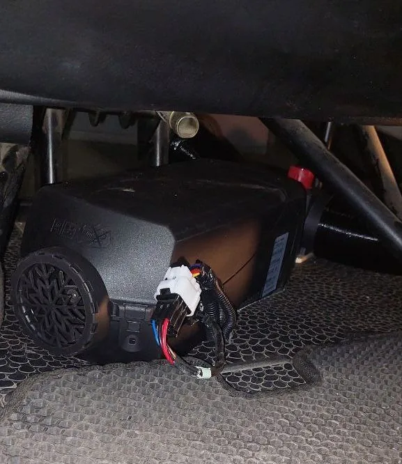
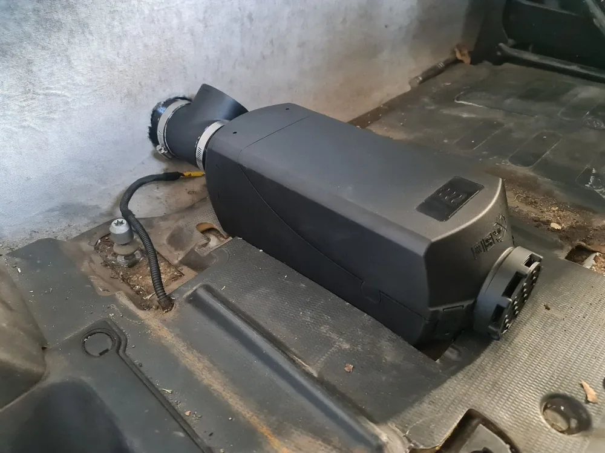
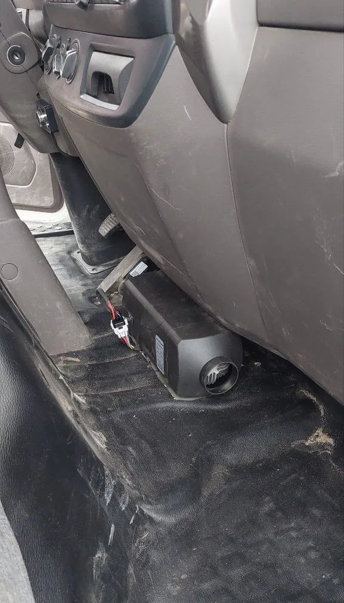
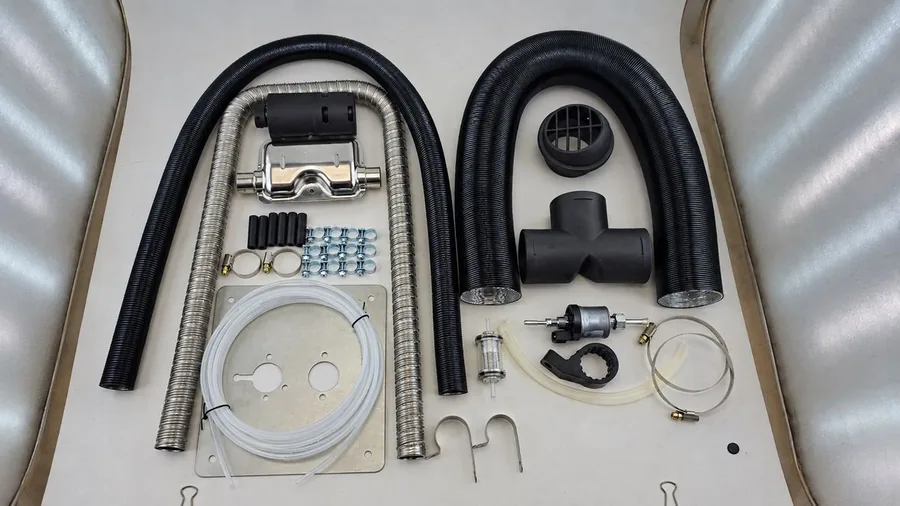
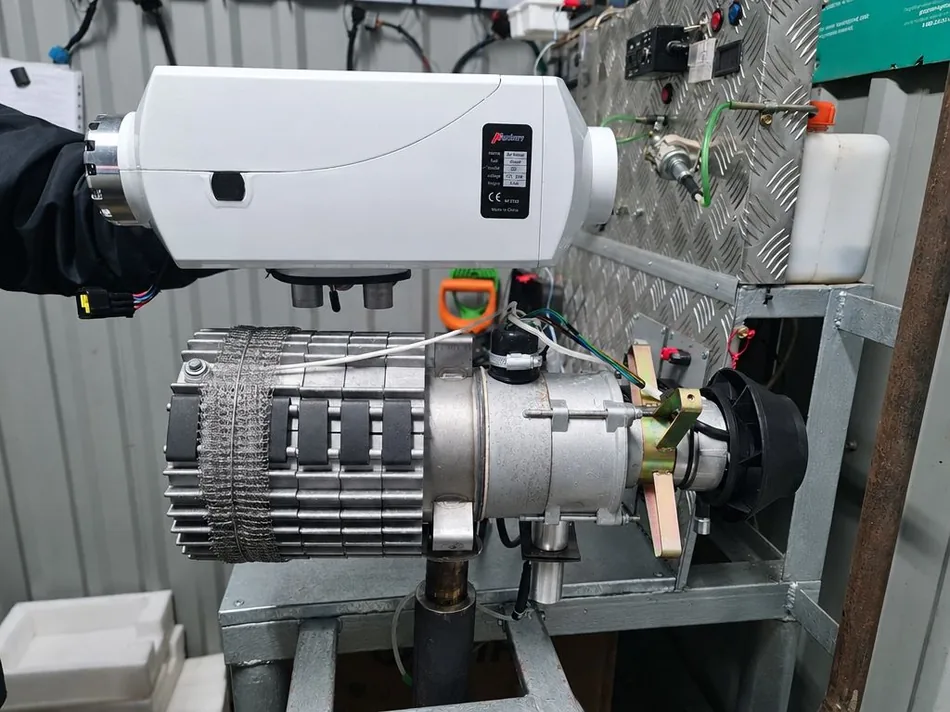
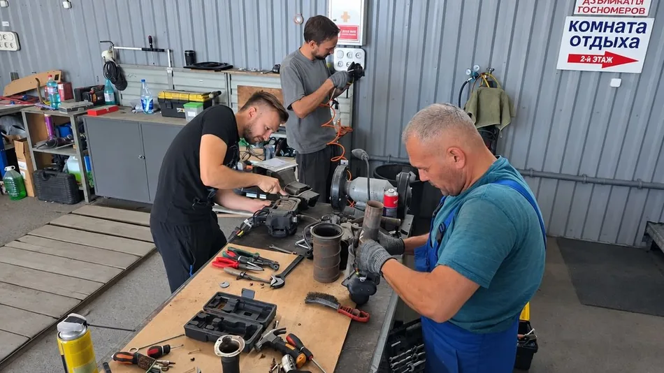

Сейчас открытоПн–Пт 09:00–18:00 · Сб 09:00–17:00
+7 (929) 818-19-99
Воздушные и жидкостные, дизельные и бензиновые.




★★★★★5,0 на Яндекс Картах · 310 отзывов
Двигатель выключен, отопитель салона греет сам.
Приедем и поставим на месте: автопарк, стройка, стоянка, база.
Сломается — привозите. Чиним сами, в своей мастерской, бесплатно.
Ставим на: автомобили · Газель · Sprinter · Ducato · Boxer · Transit · кемперы · катера · спецтехнику
Дизель не греет салон. А автономный отопитель гонит горячий воздух сам и расходует , чем обогрев на холостых.
Хватает с запасом: за 15–20 минут в салоне тепло, на заглушенном моторе работает до 12 часов.



Герметичность выхлопа и изоляцию силовой линии проверяем всегда — это часть работы.




Делаем прямой заказ на заводе TerraFrigo и собираем рефрижератор под вашу машину.
Изготовление — неделя, установка — один рабочий день. Мы числимся в списке дилеров.
Установка 4–5 часов, работает на заглушенной машине. Mahelon, сертифицированы в России. Можем выехать к вам на установку.
Подбираем радиаторы, компрессоры, подшипники, трубки. Идём от дешёвого к дорогому. Чиним в собственной мастерской.
Официально по договору, есть ЭДО.
Для больших автопарков — индивидуальные условия.

Мастер по нестандартным работам, установщик ГБО и климатики

Слесарь по ремонту ГБО и автоклиматики

Мастер-универсал

Администратор

На втором этаже своя зона отдыха: диваны, нарды, телевизор, кулер, кофе и Wi-Fi.
Легковая на холостых сжигает около 0,8 литра в час, двухкиловаттный отопитель — 200 граммов, это примерно 0,24 литра. Разница в 3 раза.
КамАЗ и другие грузовики на холостых — до 3 литров в час, пятикиловаттный отопитель — 400 граммов, около 0,48 литра. Разница почти в 6 раз.
Оставьте телефон — перезвоним через 15 минут в рабочее время